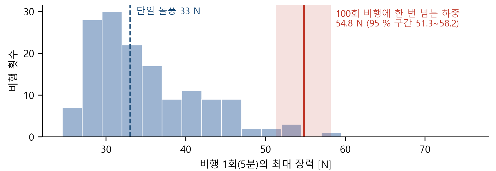
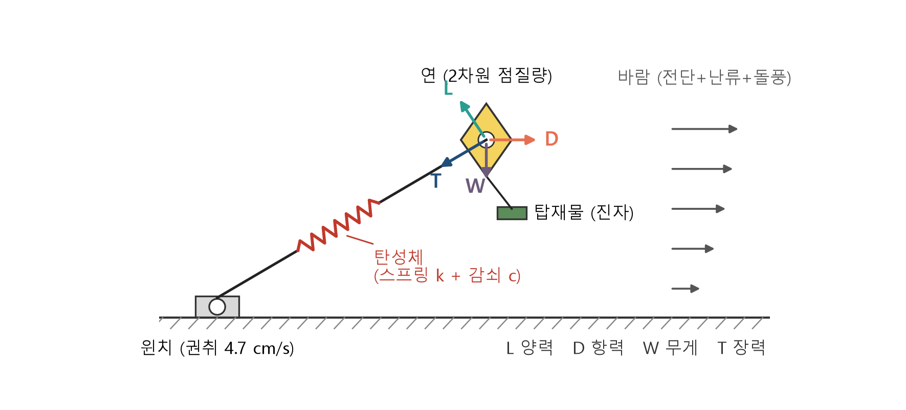

계류줄에 탄성체를 쓰면
더 적은 힘으로 연을 날릴 수 있을까?
방패연을 지상 윈치와 줄로 운용하는 에너지 자립형 공중 태양광 방식을 위해, 연–줄–탑재물 계를 시뮬레이션으로 검증한 연구입니다.
가설: 계류줄에 탄성체를 활용하면 더 적은 힘으로도 연을 날릴 수 있다.
왜 이 질문인가
돌풍이 불면 줄의 장력이 짧은 시간에 오릅니다. 우리 윈치는 줄을 4.7 cm/s로 감으므로 돌풍이 지나가는 1.5초 동안 줄 길이를 약 7 cm만 조절할 수 있습니다. 연의 형상(방패연)과 윈치 속도(모터)는 정해져 있어, 설계에서 바꿀 수 있는 변수는 줄의 강성입니다.
결과
5.59 N줄 강성을 1000배 바꿔도 정상 장력은 동일
−61 %1.5초 돌풍의 피크 장력 (38.6 → 15.0 N)
약 12 %돌풍이 10초로 길어지면 줄어드는 효과
5 %난류 비행 150회 최대 장력의 감소
54.8 N100회 비행에 한 번 초과하는 하중
152건단위시험 통과 (sim 94 + station 58)
결론: 연을 띄워 두는 힘은 공기력과 중력이 정하므로 줄의 탄성으로 낮출 수 없고, 줄과 연결부가 견뎌야 하는 피크 하중은 짧은 돌풍에서 줄일 수 있습니다. 그래서 탄성 계류줄은 윈치를 보완하는 수단이 되고, 지상국은 느린 높이 보정을 맡습니다.



모형
연은 2차원 점질량, 줄은 인장력만 전달하는 스프링·감쇠기로 나타냈고, 바람은 평균풍(멱법칙) + 난류 + 돌풍으로 구성했습니다.

저장소 구성
| 폴더 | 내용 |
|---|---|
sim/ | 시뮬레이션 모형, 바람, 분석 스크립트 30개와 테스트 |
station/ | 지상국 모니터(시리얼·재생·시뮬레이션 입력, 모형 예측과 비교) |
firmware/ | 지상국·탑재물 ESP32 펌웨어와 파서 테스트 |
실행
pip install -r requirements.txt python sim/run_all.py --quick python station/bridge.py --sim --area 0.67